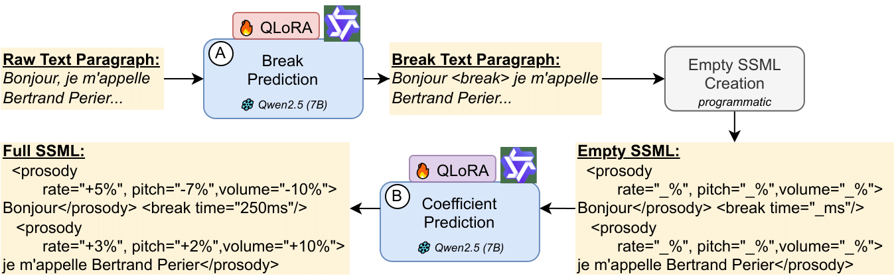
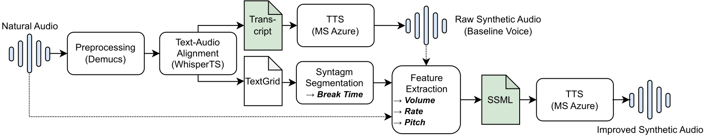

via SSML Prosody Control — An End-to-End Pipeline
First end-to-end pipeline using cascaded QLoRA-fine-tuned Qwen-2.5-7B models to insert SSML tags for controlling pitch, rate, volume, and pauses in French text — achieving significant naturalness improvements over commercial TTS baselines.
Improving the expressiveness of French TTS through learned SSML markup — from monotonic baseline to human-preferred speech.
French synthetic voices often lack expressiveness due to limited prosody control in commercial TTS systems, resulting in monotonic speech.
First end-to-end pipeline using cascaded QLoRA-fine-tuned Qwen-2.5-7B models to insert SSML tags for controlling pitch, rate, volume, and pauses in French text.
MOS scores rise from 3.20 to 3.87 (p<0.005) and 15 of 18 listeners prefer our enhanced synthesis over the Azure TTS baseline.
Raw French text → break annotations → SSML markup → expressive speech. Two fine-tuned Qwen-2.5-7B models in a cascaded inference setup.
During inference, our system transforms raw French text into expressive speech through a cascaded approach:

architecture.png
PreprocessingPipeline.pngOur models are trained using a comprehensive preprocessing pipeline that extracts prosodic features from a 14-hour French podcast corpus:
Compare standard Azure TTS output against our enhanced version with optimized SSML prosody control. Each example shows the original text, generated SSML markup, and resulting audio.
"Parmi les habitués du restaurant et donc des soirées à la maison, on comptait énormément de comédiens et de musiciens. La famille allait le plus souvent possible au cinéma et ils se rendaient dès qu'ils le pouvaient au théâtre."
Parmi les habitués du restaurant et donc des soirées à la maison, on comptait énormément de comédiens et de musiciens. La famille allait le plus souvent possible au cinéma et ils se rendaient dès qu'ils le pouvaient au théâtre.
Raw text without prosodic enhancement
<speak xmlns="http://www.w3.org/2001/10/synthesis" xmlns:mstts="http://www.w3.org/2001/mstts" version="1.0" xml:lang="fr-FR"><voice name="fr-FR-HenriNeural"><mstts:silence type="Leading-exact" value="0"/><prosody pitch="+3.34%" rate="-0.36%" volume="+10.00%"><break time="300ms"/></prosody><prosody pitch="+1.65%" rate="-1.07%" volume="-10.00%">Parmi les habitués du restaurant et donc des soirées à la maison,</prosody><prosody pitch="+1.32%" rate="-0.85%" volume="+10.00%"><break time="580ms"/></prosody><prosody pitch="+2.61%" rate="-1.12%" volume="-2.94%">on comptait énormément de comédiens et de musiciens.</prosody><prosody pitch="+2.09%" rate="-0.90%" volume="+10.00%"><break time="800ms"/></prosody><prosody pitch="+3.23%" rate="-2.72%" volume="-4.59%">La famille allait le plus souvent possible au cinéma et ils se rendaient dès qu'ils le pouvaient au théâtre.</prosody><prosody pitch="+2.59%" rate="-2.17%" volume="+10.00%"><break time="500ms"/></prosody><mstts:silence type="Tailing-exact" value="0"/></voice></speak>
AI-generated SSML with optimized prosodic parameters
Standard TTS without prosodic enhancement
Enhanced with optimized SSML prosody control
"Alors évidemment tout cela est beau, cette nécessité de maîtriser les codes de la parole en public, de surmonter son trac parce que c'est une compétence sociale, tout cela reste maintenant à savoir comment faire et c'est ce que nous allons voir dans l'épisode suivant."
Alors évidemment tout cela est beau, cette nécessité de maîtriser les codes de la parole en public, de surmonter son trac parce que c'est une compétence sociale, tout cela reste maintenant à savoir comment faire et c'est ce que nous allons voir dans l'épisode suivant.
Raw text without prosodic enhancement
<speak xmlns="http://www.w3.org/2001/10/synthesis" xmlns:mstts="http://www.w3.org/2001/mstts" version="1.0" xml:lang="fr-FR"><voice name="fr-FR-HenriNeural"><mstts:silence type="Leading-exact" value="0"/><prosody pitch="-0.77%" rate="-1.78%" volume="-10.00%"><break time="360ms"/></prosody><prosody pitch="+0.94%" rate="-1.60%" volume="-10.00%">Alors évidemment tout cela est beau,</prosody><prosody pitch="+0.75%" rate="-1.28%" volume="-10.00%"><break time="100ms"/></prosody><prosody pitch="+1.65%" rate="-2.00%" volume="-10.00%">cette nécessité de maîtriser les codes de la parole en public,</prosody><prosody pitch="+0.30%" rate="-1.60%" volume="-10.00%"><break time="80ms"/></prosody><prosody pitch="-0.78%" rate="-1.94%" volume="-10.00%">de surmonter son trac parce que c'est une compétence sociale,</prosody><prosody pitch="-0.63%" rate="-1.56%" volume="-10.00%"><break time="340ms"/></prosody><prosody pitch="-1.53%" rate="-1.80%" volume="-10.00%">tout cela reste maintenant à savoir comment faire</prosody><prosody pitch="-1.22%" rate="-1.44%" volume="-10.00%"><break time="340ms"/></prosody><prosody pitch="+0.58%" rate="-1.41%" volume="-10.00%">et c'est ce que nous allons voir dans l'épisode suivant.</prosody><prosody pitch="+0.47%" rate="-1.13%" volume="-10.00%"><break time="500ms"/></prosody><mstts:silence type="Tailing-exact" value="0"/></voice></speak>
AI-generated SSML with optimized prosodic parameters
Standard TTS without prosodic enhancement
Enhanced with optimized SSML prosody control
"Ils frapperont à Coféville, une petite ville dont il n'y a pas grand-chose à dire, si ce n'est qu'elle est balayée par la poussière, et qu'il y a quand même deux banques, la Fédérale Nationale Banque et la Condon Bank."
Ils frapperont à Coféville, une petite ville dont il n'y a pas grand-chose à dire, si ce n'est qu'elle est balayée par la poussière, et qu'il y a quand même deux banques, la Fédérale Nationale Banque et la Condon Bank.
Raw text without prosodic enhancement
<speak xmlns="http://www.w3.org/2001/10/synthesis" xmlns:mstts="http://www.w3.org/2001/mstts" version="1.0" xml:lang="fr-FR"><voice name="fr-FR-HenriNeural"><mstts:silence type="Leading-exact" value="0"/><prosody pitch="+1.02%" rate="-1.15%" volume="-10.00%"><break time="220ms"/></prosody><prosody pitch="-0.21%" rate="-1.21%" volume="-10.00%">Ils frapperont à Coféville,</prosody><prosody pitch="-0.17%" rate="-0.97%" volume="-10.00%"><break time="400ms"/></prosody><prosody pitch="-1.16%" rate="-1.17%" volume="-10.00%">une petite ville dont il n'y a pas grand-chose à dire,</prosody><prosody pitch="-0.93%" rate="-0.94%" volume="-10.00%"></prosody><prosody pitch="-1.24%" rate="-1.18%" volume="-10.00%">si ce n'est qu'elle est balayée par la poussière,</prosody><prosody pitch="-2.01%" rate="-0.95%" volume="-10.00%"><break time="560ms"/></prosody><prosody pitch="-2.44%" rate="-0.85%" volume="-10.00%">et qu'il y a quand même deux banques,</prosody><prosody pitch="-1.95%" rate="-0.68%" volume="-10.00%"><break time="180ms"/></prosody><prosody pitch="-0.35%" rate="-2.55%" volume="-10.00%">la Fédérale Nationale Banque et la Condon Bank.</prosody><prosody pitch="+1.28%" rate="-2.04%" volume="-10.00%"><break time="500ms"/></prosody><mstts:silence type="Tailing-exact" value="0"/></voice></speak>
AI-generated SSML with optimized prosodic parameters
Standard TTS without prosodic enhancement
Enhanced with optimized SSML prosody control
Two fine-tuned Qwen-2.5-7B models: break prediction (99.2% F1-score) and prosodic regression (25–40% MAE reduction).
Trained on 14-hour French podcast corpus with human-annotated prosodic preferences for natural speech patterns.
Seamless SSML generation compatible with Azure Cognitive Services for high-quality French voice synthesis.